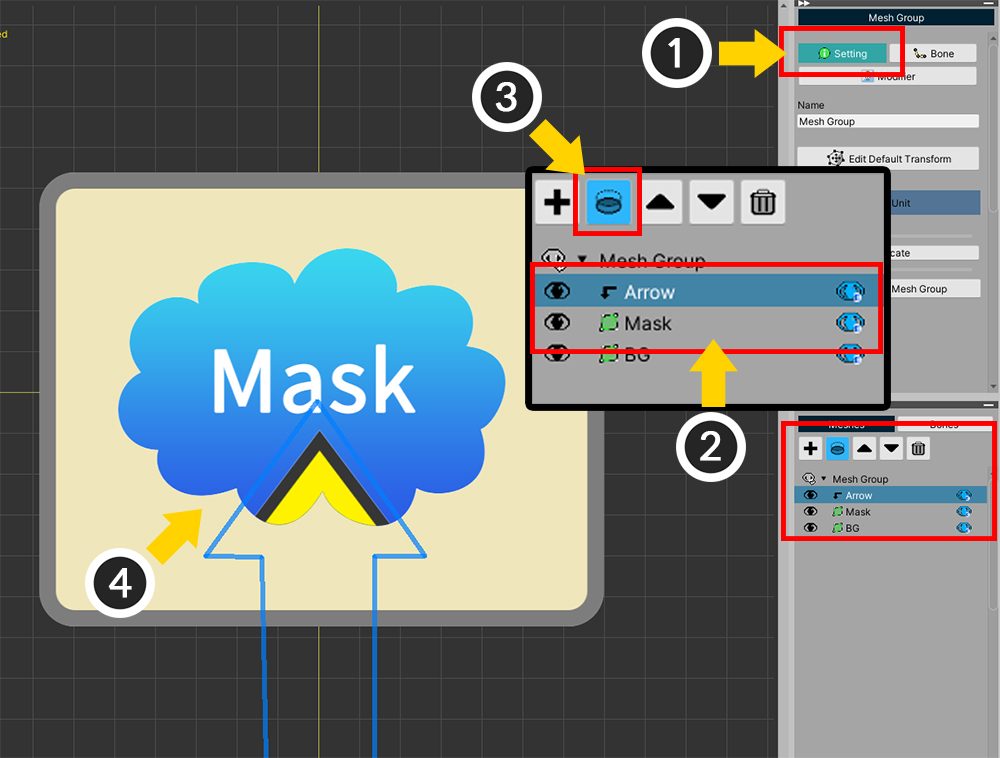
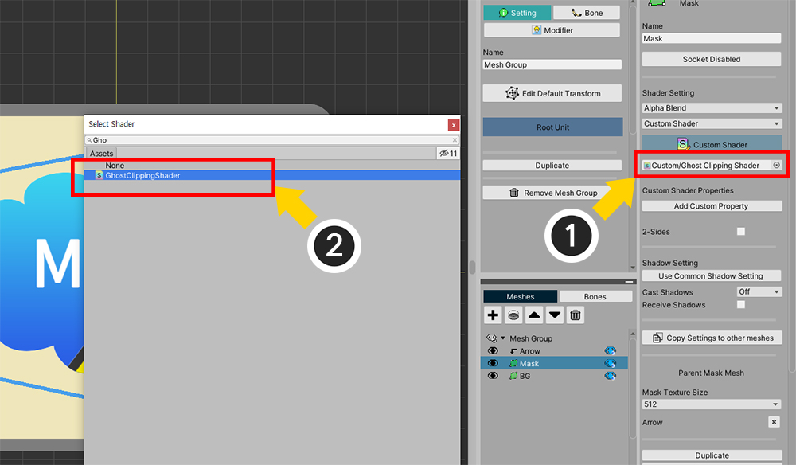
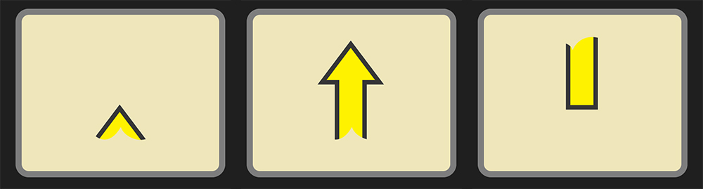
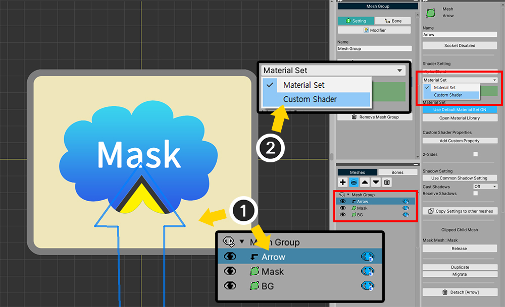
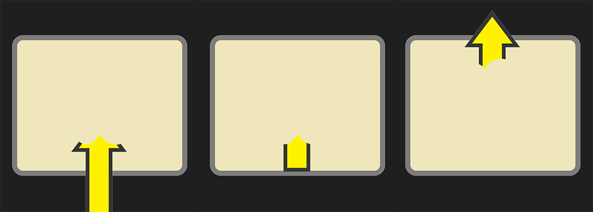

AnyPortrait > Manual > Custom Clipping Mask
Custom Clipping Mask
By using Clipping Mask, you can make only part of the mesh rendered.
While this feature is useful, you may need to utilize it in other ways.
This page covers the process of creating your own shader that handles clipping masks and masking them differently than before.
It is recommended to read the description of clipping masks and custom shaders in advance.
- Clipping Mask
- How to change the shader of the mesh
- How to write a Custom Shader
Creating a Transparent Mask
A feature of clipping masks is that clipping processing is performed while the mask is being rendered.
Unlike the previous method, let's make the clipping process performed with mask mesh not rendered.

For detailed explanation, we made the sample above.
The "Arrow mesh" moves up depending on the control parameter.
In this sample, there are "Arrow mesh", "Mask mesh", and "Background mesh".

Let's set a Clipping mask.
(1) Select the Setting tab with the mesh group selected.
(2) Select Arrow mesh.
(3) Click the Clipping button, and (4) you can see that it is clipped based on the mask mesh and rendered.
If you run the game after executing Bake, the Arrow moves inside the mask mesh as above.
This is the basic usage of the clipping mask mesh.
Now let's write a custom shader so that the Arrow is rendered with the mask mesh hidden.
Create a new Shader Asset and write the code below.
If you are using Shader Graph, see the explanation below, and create a graph to work the same.
You can see how to write a custom shader in the related page.
Shader "Custom/Ghost Clipping Shader"
{
Properties
{
_Color("2X Color (RGBA Mul)", Color) = (0.5, 0.5, 0.5, 1.0)
_MainTex("Main Texture (RGBA)", 2D) = "white" {}
}
SubShader
{
Tags{ "RenderType" = "Transparent" "Queue" = "Transparent" "PreviewType" = "Plane" }
Blend SrcAlpha OneMinusSrcAlpha
LOD 200
CGPROGRAM
#pragma surface surf SimpleColor alpha
#pragma target 3.0
half4 LightingSimpleColor(SurfaceOutput s, half3 lightDir, half atten)
{
half4 c;
c.rgb = s.Albedo;
c.a = s.Alpha;
return c;
}
half4 _Color;
sampler2D _MainTex;
struct Input
{
float2 uv_MainTex;
float4 color : COLOR;
};
void surf(Input IN, inout SurfaceOutput o)
{
o.Alpha = 0;
o.Albedo = half3(0, 0, 0);
}
ENDCG
}
}
The code above is almost the same as the basic Alpha Blend shader.
However, the code in the surf function has been modified.
As you can see in the code, this shader does not render anything because we set the value of Alpha to 0.
(You can freely set the shader name.)
Now let's apply this shader.

With the mesh group's Setting tab selected,
(1) Select the Mask mesh.
(2) Change the shader setting from Material Set to Custom Shader.

(1) To the Custom Shader Asset item, (2) assign the Shader Asset written above.

Custom shaders are not applied in AnyPortrait editor.
To see it in the Unity scene, run Bake.

When the game runs, you can see that "Mask Mesh" is not visible as above, and only "Arrow Mesh" is affected by the mask and rendered.
Inverting the Mask Area
Currently, the "Arrow" mesh is only rendered inside the area of the mask.
Using a custom shader, you can make it only render outside the area of the mask.
Let's create a new shader asset and write it like this:
You can see how to write a clipping shader in the related page.
Shader "Custom/Invert Clipped Shader"
{
Properties
{
_Color("2X Color (RGBA Mul)", Color) = (0.5, 0.5, 0.5, 1.0)
_MainTex("Base Texture (RGBA)", 2D) = "white" {}
_MaskTex("Mask Texture (A)", 2D) = "white" {}
_MaskScreenSpaceOffset("Mask Screen Space Offset (XY_Scale)", Vector) = (0, 0, 0, 1)
}
SubShader
{
Tags{ "RenderType" = "Transparent" "Queue" = "Transparent" "PreviewType" = "Plane"}
Blend SrcAlpha OneMinusSrcAlpha
LOD 200
CGPROGRAM
#pragma surface surf SimpleColor alpha
#pragma target 3.0
half4 LightingSimpleColor(SurfaceOutput s, half3 lightDir, half atten)
{
half4 c;
c.rgb = s.Albedo;
c.a = s.Alpha;
return c;
}
half4 _Color;
sampler2D _MainTex;
sampler2D _MaskTex;
float4 _MaskScreenSpaceOffset;
struct Input
{
float2 uv_MainTex;
float4 screenPos;
float4 color : COLOR;
};
void surf(Input IN, inout SurfaceOutput o)
{
half4 c = tex2D(_MainTex, IN.uv_MainTex);
c.rgb *= _Color.rgb * 2.0f;
float2 screenUV = IN.screenPos.xy / max(IN.screenPos.w, 0.0001f);
screenUV -= float2(0.5f, 0.5f);
screenUV.x *= _MaskScreenSpaceOffset.z;
screenUV.y *= _MaskScreenSpaceOffset.w;
screenUV.x += _MaskScreenSpaceOffset.x * _MaskScreenSpaceOffset.z;
screenUV.y += _MaskScreenSpaceOffset.y * _MaskScreenSpaceOffset.w;
screenUV += float2(0.5f, 0.5f);
float mask = tex2D(_MaskTex, screenUV).r;
mask = 1 - mask;
c.a *= mask;
o.Alpha = c.a * _Color.a;
o.Albedo = c.rgb;
}
ENDCG
}
}
The code above is also very similar to the basic "Alpha Blend Clipped Shader Code", with only one more line added.
mask = 1 - mask;
This code is responsible for inverting the value of the masking.
Mask values range from 0 to 1, so if you write as above, the rendered area is inverted.
Now let's apply this custom shader asset.

Above we applied a custom shader to the Mask mesh, but in this step, we apply it to the clipped "Arrow" mesh.
(1) Select the Arrow mesh.
(2) Change the mesh shader property from Material Set to Custom Shader.

(1) To the Custom Shader Asset item, (2) assign the Clipped Shader Asset created above

Now run Bake and run the game to see the rendering result.
Unlike the previous rendering results, you can see that the Arrow Mesh is only rendered outside the Mask Area.
Using custom shaders, you can create a variety of different rendering results, like the examples shown on this page.
Use it to create cool character animations!